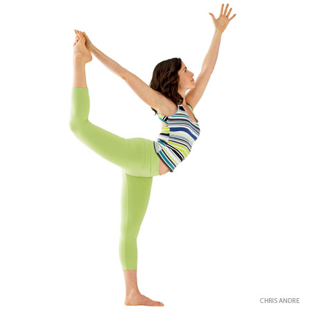

Back or spine injury: Perform this pose only with the supervision of an experienced teacher.
Benefits
Stimulates the liver and kidneys
Stretches the shoulders, hips, and neck
Energizes the spine
Stimulates the digestive fire in the belly
Relieves menstrual discomfort, fatigue, sciatica, and backache
Therapeutic for asthma and infertility
Traditional texts say that Ardha Matsyendrasana increases appetite, destroys most deadly diseases, and awakens kundalini.
Lord of the Dance Pose

Pose Information
Sanskrit Name : Natarajasana
Pose Level : 1
Beginner's Tip
Many beginners, when lifting the leg, tend to cramp in the back of the thigh. Be sure to keep the ankle of the raised foot flexed; that is, draw the top of the foot toward the shin.